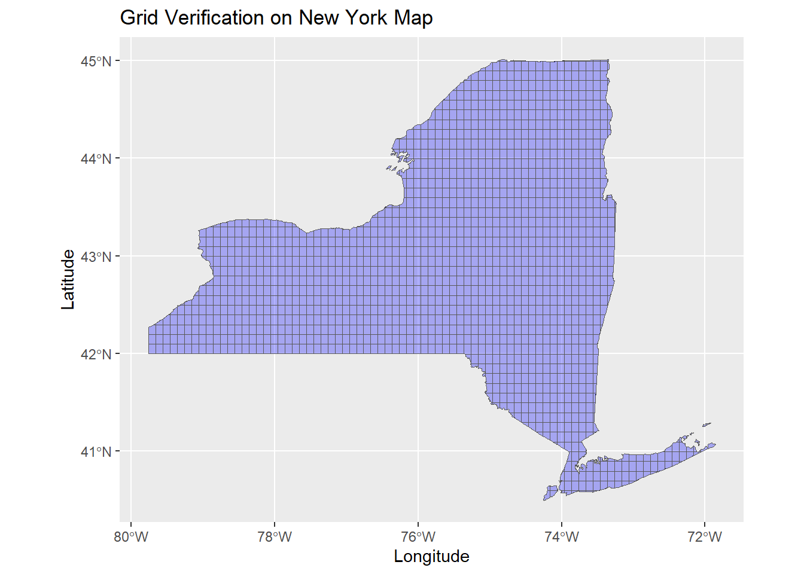
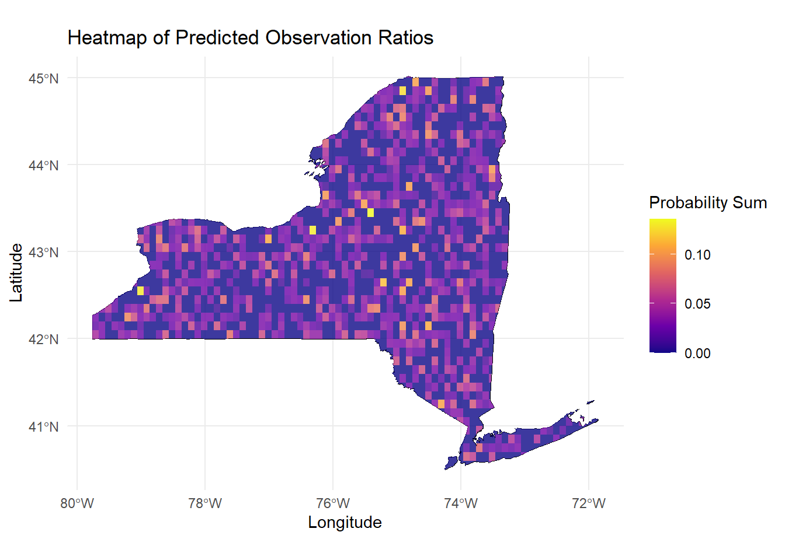

weather_df <- read_csv("data/zf_with_weather_landcover.csv") |>
filter(!is.na(t_avg)) |>
filter(!is.na(landcover)) |>
mutate(t_avg_flag = as.integer((t_avg - min(t_avg, na.rm = TRUE)) / 1)) |>
mutate(snow_flag = as.integer((snow - min(snow, na.rm = TRUE)) / 5))## Rows: 1699258 Columns: 31
## ── Column specification ────────────────────────────────────────────────────────
## Delimiter: ","
## chr (10): checklist_id, state, county, usfws_code, atlas_block, locality, o...
## dbl (19): bcr_code, duration_minutes, effort_distance_km, number_observers,...
## lgl (1): all_species_reported
## date (1): observation_date
##
## ℹ Use `spec()` to retrieve the full column specification for this data.
## ℹ Specify the column types or set `show_col_types = FALSE` to quiet this message.weather_df <- weather_df |>
group_by(t_avg_flag, snow_flag) |>
mutate(
group_obs_count = n(),
total_obs_count = nrow(weather_df),
obs_ratio = group_obs_count / total_obs_count
) |>
ungroup()lm_model = lm(obs_ratio ~ tmax + tmin + prcp + snow + snwd + landcover + lon + lat, data = weather_df)
summary(lm_model)##
## Call:
## lm(formula = obs_ratio ~ tmax + tmin + prcp + snow + snwd + landcover +
## lon + lat, data = weather_df)
##
## Residuals:
## Min 1Q Median 3Q Max
## -0.04057 -0.00433 0.00174 0.00791 0.50354
##
## Coefficients:
## Estimate Std. Error t value Pr(>|t|)
## (Intercept) 3.693e-02 5.573e-04 66.270 < 2e-16 ***
## tmax 5.119e-04 2.913e-06 175.717 < 2e-16 ***
## tmin -9.125e-05 3.236e-06 -28.199 < 2e-16 ***
## prcp 4.910e-05 1.613e-06 30.440 < 2e-16 ***
## snow -1.548e-04 9.593e-07 -161.338 < 2e-16 ***
## snwd -4.819e-05 2.424e-07 -198.792 < 2e-16 ***
## landcover 4.915e-06 5.020e-07 9.790 < 2e-16 ***
## lon 1.572e-04 8.875e-06 17.712 < 2e-16 ***
## lat -6.145e-05 1.469e-05 -4.184 2.86e-05 ***
## ---
## Signif. codes: 0 '***' 0.001 '**' 0.01 '*' 0.05 '.' 0.1 ' ' 1
##
## Residual standard error: 0.009615 on 669934 degrees of freedom
## (17023 observations deleted due to missingness)
## Multiple R-squared: 0.3359, Adjusted R-squared: 0.3359
## F-statistic: 4.236e+04 on 8 and 669934 DF, p-value: < 2.2e-16ny_boundary <- st_make_valid(ny_boundary)
grid_size <- 0.1
ny_grid <- st_make_grid(
ny_boundary,
cellsize = grid_size,
square = TRUE
) |>
st_as_sf()
ny_grid <- st_intersection(ny_grid, ny_boundary) |>
st_make_valid()## Warning: attribute variables are assumed to be spatially constant throughout
## all geometriesggplot() +
geom_sf(data = ny_boundary, fill = NA, color = "black") +
geom_sf(data = ny_grid, fill = "blue", alpha = 0.3) +
labs(
title = "Grid Verification on New York Map",
x = "Longitude",
y = "Latitude"
)
ny_grid <- ny_grid |> st_make_valid()
set.seed(42)
sampled_points <- ny_grid |>
st_sample(size = 1000, type = "random") |>
st_as_sf() |>
st_join(ny_grid)
weather_stats <- weather_df |>
summarise(
tmax_mean = mean(tmax, na.rm = TRUE),
tmax_sd = sd(tmax, na.rm = TRUE),
tmax_ci_low = quantile(tmax, probs = 0.025, na.rm = TRUE),
tmax_ci_high = quantile(tmax, probs = 0.975, na.rm = TRUE),
tmin_mean = mean(tmin, na.rm = TRUE),
tmin_sd = sd(tmin, na.rm = TRUE),
tmin_ci_low = quantile(tmin, probs = 0.025, na.rm = TRUE),
tmin_ci_high = quantile(tmin, probs = 0.975, na.rm = TRUE),
prcp_mean = mean(prcp, na.rm = TRUE),
prcp_sd = sd(prcp, na.rm = TRUE),
prcp_ci_low = quantile(prcp, probs = 0.025, na.rm = TRUE),
prcp_ci_high = quantile(prcp, probs = 0.975, na.rm = TRUE),
snow_mean = mean(snow, na.rm = TRUE),
snow_sd = sd(snow, na.rm = TRUE),
snow_ci_low = quantile(snow, probs = 0.025, na.rm = TRUE),
snow_ci_high = quantile(snow, probs = 0.975, na.rm = TRUE),
snwd_mean = mean(snwd, na.rm = TRUE),
snwd_sd = sd(snwd, na.rm = TRUE),
snwd_ci_low = quantile(snwd, probs = 0.025, na.rm = TRUE),
snwd_ci_high = quantile(snwd, probs = 0.975, na.rm = TRUE)
)
predict_data <- ny_grid |>
st_sample(size = 1000, type = "random") |>
st_as_sf() |>
st_coordinates() |>
as.data.frame() |>
rename(lon = X, lat = Y)
predict_data <- predict_data |>
mutate(
tmin = runif(n(), min = weather_stats$tmin_ci_low, max = weather_stats$tmin_ci_high),
tmax = tmin + runif(n(), min = 1, max = weather_stats$tmax_ci_high - weather_stats$tmax_ci_low),
prcp = runif(n(), min = weather_stats$prcp_ci_low, max = weather_stats$prcp_ci_high),
snow = runif(n(), min = weather_stats$snow_ci_low, max = weather_stats$snow_ci_high),
snwd = runif(n(), min = weather_stats$snwd_ci_low, max = weather_stats$snwd_ci_high),
landcover = sample(c(21, 22, 23, 24), n(), replace = TRUE)
)
predict_data$obs_ratio <- predict(lm_model, newdata = predict_data)grid_predictions <- st_join(ny_grid, st_as_sf(predict_data, coords = c("lon", "lat"), crs = st_crs(ny_grid))) |>
group_by(x) |>
summarise(
prob_sum = sum(obs_ratio, na.rm = TRUE),
prob_mean = mean(obs_ratio, na.rm = TRUE)
) |>
ungroup()ggplot() +
geom_sf(data = ny_boundary, fill = NA, color = "black") +
geom_sf(data = grid_predictions, aes(fill = prob_sum), color = NA, alpha = 0.8) +
scale_fill_viridis_c(option = "plasma", name = "Probability Sum") +
labs(
title = "Heatmap of Predicted Observation Ratios",
x = "Longitude",
y = "Latitude"
) +
theme_minimal()